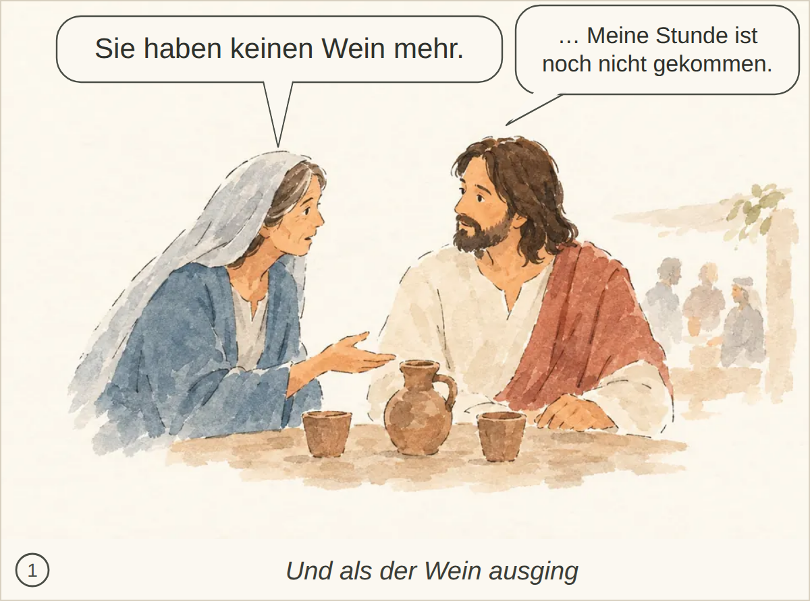
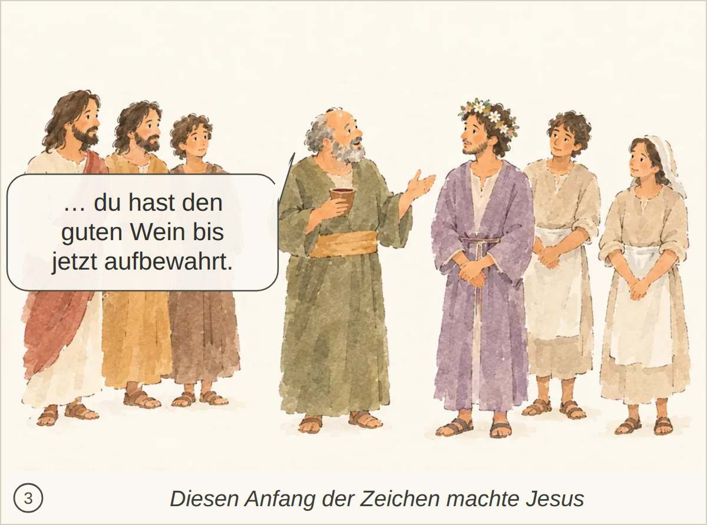
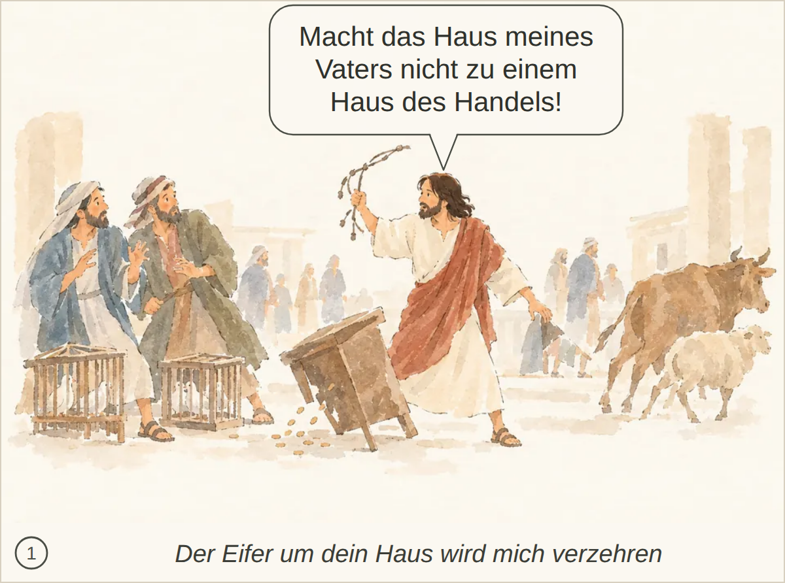
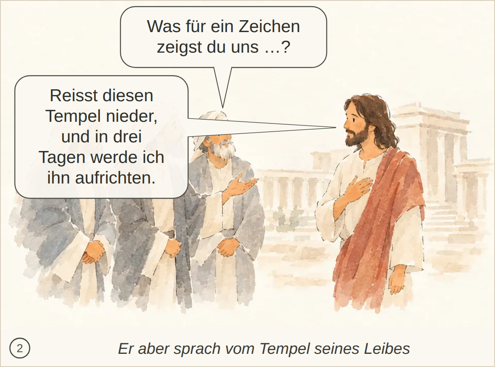
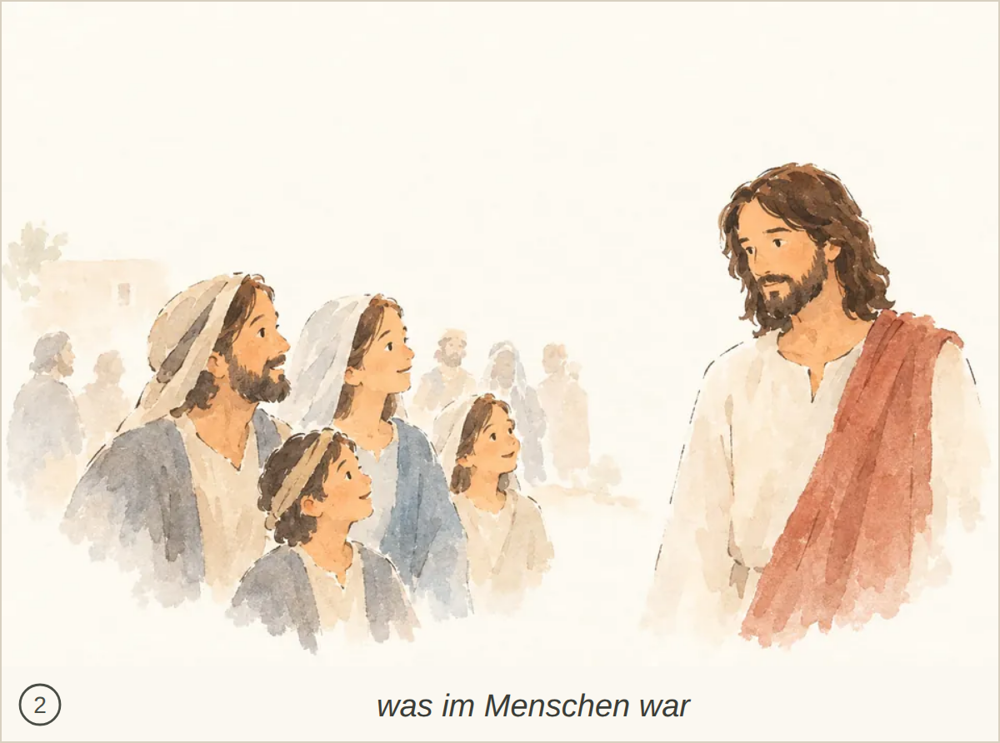
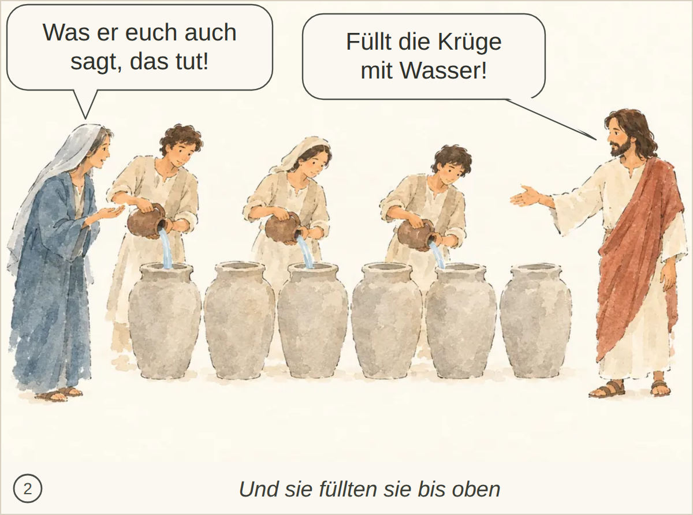
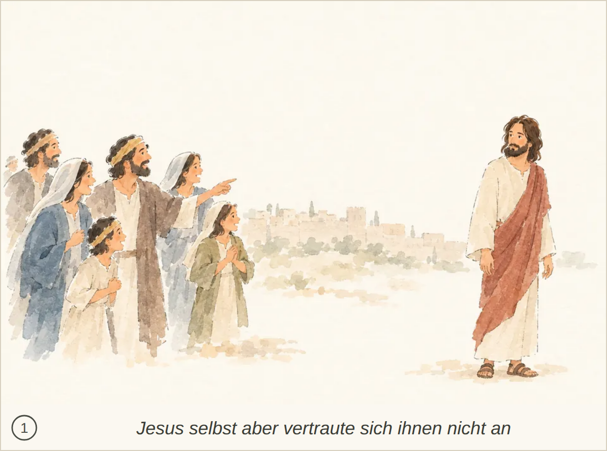

abgelegtes Bild: bestanden, 6 Punkte, Kern 1 Die Szene und Marias Hinweis auf den fehlenden Wein werden erkannt, aber Jesu Antwort („Meine Stunde ist noch nicht gekommen“) fehlt.
Blind: A veiled woman is speaking to a bearded man at a table, gesturing with an open hand. The man listens and looks back at her while cups and a jug sit between them. A few faint background figures suggest a gathering or meal behind them. – This may illustrate the Wedding at Cana, specifically the moment when Mary tells Jesus about the wine running out before the miracle.

Kachel: bestanden, Kern 2 Nichts Wesentliches fehlt.
abgelegtes Bild: bestanden, 7 Punkte, Kern 2 Der genaue Wortlaut („guten Wein bis jetzt aufbewahrt“) und das Kosten des Weins werden nicht ausdrücklich genannt.
Blind: An older man in the centre is holding a cup and gesturing as if speaking to the young man in the purple robe. The others stand around them watching, with calm or pleased expressions. The scene looks like a ceremonial or wedding moment. – This may illustrate the wedding at Cana, possibly the moment when wine is being presented or discussed after the water has been changed into wine.

Kachel: bestanden, Kern 2 Nichts Wesentliches fehlt; der Speisemeister, der Bräutigam und die Aussage über den guten Wein werden klar erkannt.
abgelegtes Bild: bestanden, 7 Punkte, Kern 2 Der Ausspruch Jesu wird nicht erwähnt; das Ausschütten der Münzen ist nur durch verstreute Münzen angedeutet.
Blind: A bearded man in white and red is driving people and animals away, holding up a cord or whip. Two men at the left recoil in fear beside cages, while a table has been overturned and coins are scattered on the ground. Animals on the right appear to be moving away. – This appears to illustrate Jesus cleansing the Temple: the moment when Jesus has overturned a money changer's table and is driving out sellers, animals, and traders with a cord or whip.

Kachel: bestanden, Kern 2 Nichts Wesentliches fehlt; die Szene wird klar erkannt.
abgelegtes Bild: bestanden, 5 Punkte, Kern 1 Die Szene als Zeichenforderung der Juden und Jesu konkrete Aussage «Reisst diesen Tempel nieder, und in drei Tagen werde ich ihn aufrichten» fehlen; auch Missverständnis über Tempel/Gebäude vs. Leib und Bezug zur Auferstehung werden nicht erkannt.
Blind: Three robed men stand together on the left and appear to be addressing or listening to the man on the right. The man on the right, wearing a reddish-brown drape, responds calmly with one hand on his chest. – This may illustrate a Bible scene of Jesus speaking with religious leaders or elders near the temple, possibly during a discussion or challenge to his teaching. The exact moment is not certain from the image alone.

Kachel: durchgefallen, Kern 2 Allenfalls fehlt die spätere Erinnerung der Jünger nach der Auferweckung; die Hauptszene ist klar erfasst.
abgelegtes Bild: durchgefallen, 4 Punkte, Kern 1 Es fehlt, dass die Menschen wegen der Zeichen glauben und dass Jesus sich ihnen nicht anvertraut, weil er ihr Inneres kennt; die Szene wird eher als freundliches Kinder-/Lehrgespräch gedeutet.
Blind: A bearded man in a white tunic and reddish cloak is facing a family-like group of adults and children. The group smiles and looks up at him, suggesting a warm conversation or teaching moment. – This likely illustrates a Bible scene of Jesus welcoming or blessing children, at the moment when children and adults are gathered around him and he is addressing them kindly.

Kachel: bestanden, Kern 1 Es fehlt der eigentliche Sinn: Viele glauben wegen der Zeichen, aber Jesus vertraut sich ihnen nicht an, weil er alle kennt und weiß, was im Menschen ist.
abgelegtes Bild: unklar, 6 Punkte, Kern 2 Im Wesentlichen erfasst; nur das anschließende Schöpfen und Bringen zum Speisemeister wird nicht gezeigt/erwähnt.
Blind: Three servants are pouring water from small pitchers into large stone jars. A woman on the left watches and gestures toward the work, while a bearded man on the right gestures toward the jars as if giving instructions. – This likely illustrates the wedding at Cana, at the moment when Jesus tells the servants to fill the six stone jars with water before the water is changed into wine. The woman on the left may be Mary, watching as the servants obey.

Kachel: bestanden, Kern 2 Nichts Wesentliches; nur der Auftrag, etwas zum Speisemeister zu bringen, wird nicht erwähnt.
abgelegtes Bild: durchgefallen, 4 Punkte, Kern 1 Es wird nur eine Gruppe gezeigt, die auf Jesus schaut/zeigt. Es fehlt der Bezug zu Passa in Jerusalem, zu den Zeichen und zum Glauben vieler; auch Jesu Zurückhaltung, weil er das Innere der Menschen kennt, wird nicht erkannt. Die Deutung als Kindersegnung ist eher falsch.
Blind: A group of adults and children on the left is looking toward a robed bearded man standing apart on the right. One man and one younger figure in the group point toward him, while the children appear eager or attentive. – Possibly a Bible illustration of people bringing children or a family group toward Jesus, similar to the moment before Jesus welcomes and blesses the children. The exact story is not certain from the visible image alone.

Kachel: bestanden, Kern 2 Nichts Wesentliches; Passa in Jerusalem und die Zeichen sind nicht ausdrücklich sichtbar, aber die Szene wird klar erkannt.